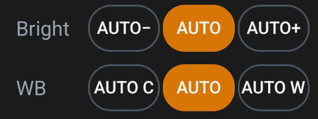
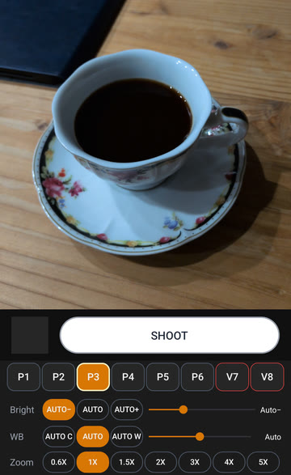
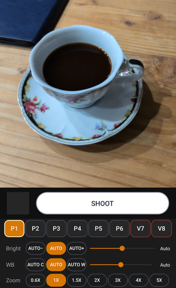
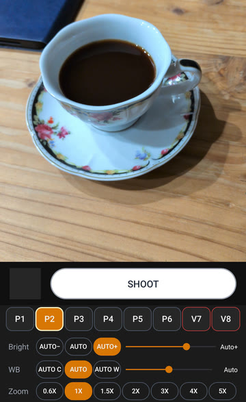
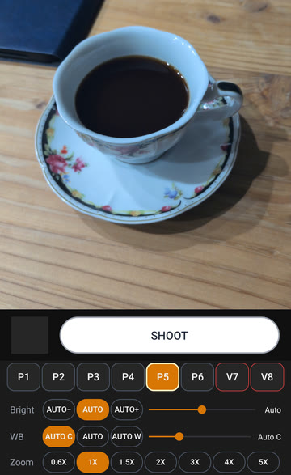
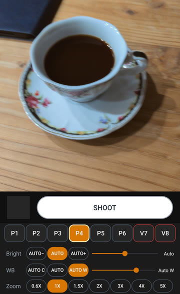
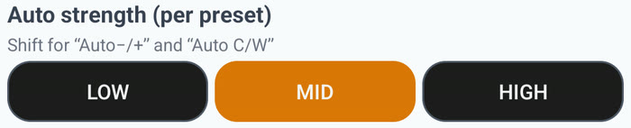
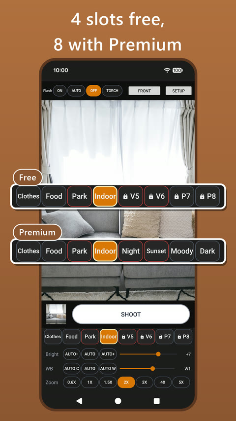
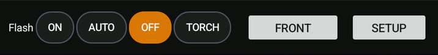

I changed the brightness every single time
On Auto, my phone's built-in camera always looked a bit too dark to me. So every time I opened it, I bumped up the brightness.
Video was even darker. Photos and videos didn't match, so switching modes meant fixing the brightness all over again. It was a real chore.
Before you install anything, try this
If you have the same problem, take a quick look through your camera app's settings first. Some camera apps let you keep things like brightness the way you left them.
What still bugged me
I shoot both photos and videos, and readjusting each one every time drove me crazy. Some days I want things brighter, other days a little warmer, depending on what I'm shooting.
So I thought: why not a camera where my favorite settings live on buttons, and one tap brings them back? I had never programmed before. I built it over 100 days, asking AI along the way, and that became Preset Camera (ピッとカメラ in Japan).
Actually, I had tried making an Android app once before and gave up. This was my comeback after more than ten years.
My favorite part: Auto, nudged brighter or warmer
I added "darker / brighter" and "cooler / warmer" to Auto. The right brightness and color are different for everyone, so I wanted each person to have their own best Auto.

You keep everything that's good about Auto, since it still adjusts to each scene, and just lean it a little toward what you like. For my "always a bit dark" problem, AUTO+ was the answer.
Brightness



Color


The same cup in a dim room at night (cropped and resized only, no color or brightness edits). The buttons at the bottom show which one is on.
You can set how far it leans: low, mid, or high. It's set per button, so you can use low for photos and high for videos, which tend to come out darker. (I redid the way the colors work 8 times.)

Save it to a button, switch in one tap
Each button (preset) can save brightness, white balance, the kind of Auto, zoom, and more. You choose photo or video for each one, and you can give it a name of up to 9 characters. Tap a button on the camera screen and you're on those settings.
Fun fact: naming came later. I added it in an update about a month and a half after launch.

You get 4 buttons for free and 8 with Premium (a one-time purchase). I think 4 to 8 is plenty, but if you want more, please let me know!
Something I noticed while building it: flash as words
In the camera I used before, the flash icon was tucked away, so I couldn't turn on the light quickly. And as an icon, it was hard to tell whether it was on, auto, off, or torch.
So in Preset Camera, ON, AUTO, OFF, and TORCH are spelled out across the top of the camera screen. Words are clearer than icons, and one tap switches them.

How I use it
Put the settings you use most on the first button. When in doubt, tap that one, and you'll get your usual look.
I'd love your feedback
I make this app on my own, so hearing from people who use it helps more than anything. Hard to use here? Wish it had some setting? Anything is welcome.
Have you ever shot on Auto and thought, "if only it were just a little brighter..."?